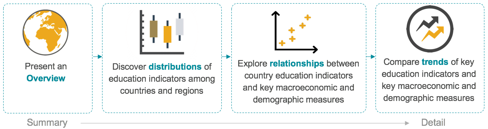

Explore And Visualize Educational Opportunities for Women
Around the world, women face barriers to education caused by poverty, cultural norms, poor infrastructure, violence and political instability. Better educated women tend to be healthier, participate more in the formal labor market, earn higher incomes, have fewer children, marry at a later age, and enable better health care and education for their children, should they choose to become mothers. All these factors combined can improve the lives of a nation’s citizens. Closing the education gender gap is a strategic development priority for the United Nations and World Bank.
Our goal is to enable users to efficiently discover, compare and explore educational opportunities for women around the world and aid in the iterative cycle of data exploration, hypotheses generation, testing and insights that ultimately lead to policies that eliminate the education gender gap.
DATA: The World Bank EdStats All Indicator Query dataset holds around 4,000
internationally comparable features that describe education access, progression, completion, literacy, teachers,
population, and expenditures. EdStats covers over 200 countries dating back to 1970. Our project utilizes EdStats’
country-level enrollment statistics as a proxy for educational opportunities by gender at the primary, secondary and tertiary education levels.
USERS: Policy analysts, government education/development officials and NGOs concerned with gender equality issues in education.
TASKS:

Overview of the enrollment rate of female and the gender parity index (GPI)* of enrollment rate by country and year
Interesting Insights:
- Overall trends: GPI and Enrollment rate of female is steadily going up over time, indicating more and more women get the opportunity to receive education. However, there are some outliers, for example, the GPI of Tajikistan decrease from above 0.9 to below 0.8 in the year of 1998 because of the Civil War.
- Outliers: Qatar has far higher GPI (1.997) than that of the second highest country Curaca (1.447).
- Enrollment rate of female has higher variance than that of GPI.
Navigation Instructions:
- Overview of the number of key indexes, the enrollment rate of female and GPI, globally.
- Select index that you would like to see on map and timeline chart.
- On the map, hover through a country (or select countries) of interest. Check the highlighted index of that country among other countries. And check the index trend and data availability of that country through years.
- From the dropdown to highlight country, users can manually search for the countries to highlight them on the map.
- On the distribution chart, hover through the outliers on the index distribution chart, and see the name of that country and the time line chart accordingly.
- On the timeline chart, hover through one year (or select years) to see the index of that year globally on the map, and the distribution of that year.

Discover geographic distributions of educational opportunities for women at different levels of schooling using key macro outcomes to filter the data.
Interesting Insights:
- The countries in the lower quartile of average female enrollment all have above median population growth.
- Most countries with enrollment rates favoring women have very high enrollment overall.
- Countries not reporting enrollment data are predominantly located in low-enrollment regions.
- Below median female enrollment rates are predominantly found throughout Africa, the Middle East, and Asia.
Navigation Instructions:
- To discover interesting geographic distributions, select an enrollment and macro outcome measure using the radio buttons at the right of the dashboard.
- The map will display the selected enrollment indicator averaged over the selected time frame. Try changing the selected years to discover countries making significant educational enrollment progress.
- Select portions of the box and whisker plots at the top of the dashboard to find regions of similar enrollment, gender parity, or macro-economic outcome.
- Select areas of the map to focus on a specific region and identify country outliers within that selection.

Explore the relationship between educational opportunities for women at different levels of schooling and the key macro outcomes of population and economic growth.
Interesting Insights:
- Strong negative relationship between female enrollment rates and population growth rates
- Weaker, but positive relationship between female enrollment rates and economic growth rates
- High population growth | low female enrollment countries are concentrated in sub-Saharan Africa and South Asia
- Reducing the gender gap at the secondary school level has the biggest impact on population growth
Navigation Instructions:
- To explore a relationship, select an enrollment and macro outcome measure using the dropdown boxes at the top left of the dashboard.
- Using the dropdown boxes to the right, you can filter countries by their respective Geographic Region and/or Income Group.
- Clicking on the Geographic Region or Income Group legend symbols will highlight those countries.
- For more navigation tips, hover over the lightbulb icon at the bottom right of the dashboard.

Analyze and compare trends of key education indicators and key macroeconomic and demographic measures
While the earlier sections provided visualisations to identify overall relationships between education indicators and macroeconomic/demographic indicators,
this section enables users to identify year-on-year trends of these indicators individually
Interesting Insights:
-
Low and Low-Middle income countries
- There seems to be an improvement in female enrollment rate and gender parity in most of the Low and Low-Middle income countries.
- Though the overall enrollment numbers are not very high yet, these countries have been successful in achieving continuous growth.
- These countries must improve their outreach further to improve their overall enrollment rates
- As expected, most High-income countries have high enrollment rates over the years and they have been able to sustain these rates.
Navigation Instructions:
- Select a country (or type the country name) from the dropdown of your choice in the top left corner to observe the trends After selecting the country click outside the dropdown to close the drop down. (* To reset the dropdown click option "All" 2 times)
- In the next two dropdowns select an education enrollment rate indicator, and a gender parity index to compare their trends.
- The two graphs in the bottom show trends in population growth and GDP growth of the country
- Hover over a specific point of interest to see its corresponding values, double click on that point to filter rest of the graphs for that specific year
- Select multiple countries from the country dropdown to compare trends for different countries.
- Clicking on the country name legend will highlight the country if you are comparing trends for multiple countries